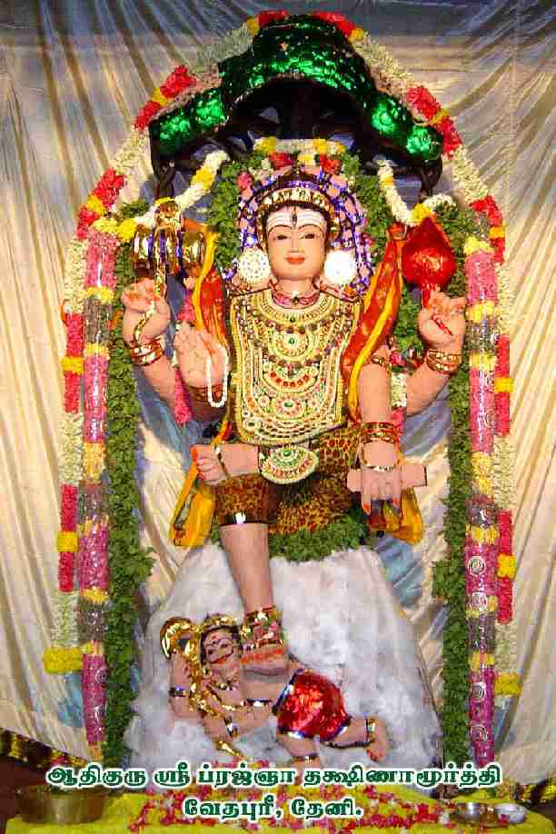
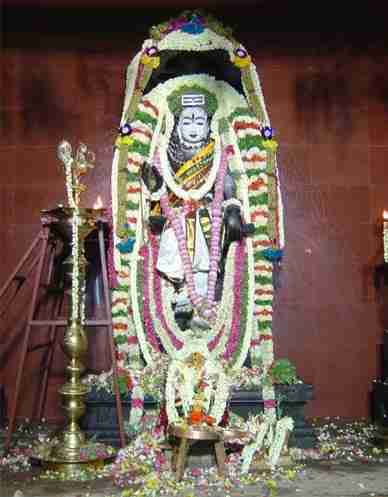

This page is specifically constructed and presented on the request of Mr.P.A. Venkataraman, who has written to me with a couple of photos as attachment. His letter is reproduced below:
Namaskaarams.There is a newly built DHAKSHINAMURTHY Temple in Vedapuri at theni.let me subit his photo here, so that this site visitors, may see him,know abt him and get his blessings thro' their prayers. this temple is built by Swami OMKARANANDHA JI , student of Swami CHITBHAVANANDHA JI.
As per his request, here are the two photos available for you to view and/or download. Due to my web site space constraints, I have produced only reasonable quality images here. Each image below is shown in small thumbnail format, and can be enlarged by clicking on the same.
| Aadhiguru Sree Pragnaa Dakshinamurthy Temple, Vedapuri,Theni: | |
|
 |
 |